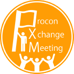
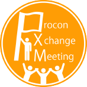

「見たことない」を、全力で、楽しむ。
宇部工業高等専門学校 制御情報工学科に在学中。コンピュータ部にて副部長、部長を経験。
とにかく「面白そう」「見たことない」「新しい」ものが大好きです。
ゲーム開発、web開発をメインに情報セキュリティ、またデザインや動画編集など様々な分野のものづくりや創作活動に興味があります。イベント運営などプロジェクト・コミュニティを立ち上げることが好きで、高専カンファレンスの実行委員長を務めたり、温泉好き高専生が集まる「kosen_ONSENs」、カードゲームが好きな高専生を集めて新しいカードゲームを作る「kosen_TCGs」、宇部高専コンピュータ部の仲間と物語を作る「project_konjac」などの団体に所属したり、様々な活動をしています。
レノファ山口FCを応援している”サポーター”で、地元の小さな温泉郷・湯田温泉が大好きです。卒業後は県外に出て勉強会などの盛んな環境で自分の能力を高めていきたいと思っていますが、いずれは山口県に貢献するような何かを作りたいです。


 
